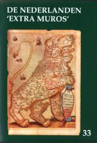
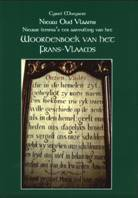

> publicaties
>
jaarboek 33 (2011)
Dit 33e
Jaarboek De
Nederlanden ‘extra muros’ biedt
weer een eigenzinnige mix aan
bijdragen
over de territoria die deel uitmaken van ons Nederlandse nationaal
erfgoed.
“Die van Aalst die zijn zo
kwaad…” verkondigen
die van Dendermonde trots over hun Ros Beiaard met zijn Vier Heemskinderen.
Dat
deze sage ook in het Romaansstalige landsgedeelte zijn varianten kent,
is
wellicht minder geweten.
De polyfonie kwam tot haar hoogste bloei in Italië
en in de
Nederlanden. Over tweeënvijftig van hen, stammend uit de
Zuidelijke
Nederlanden – van Alexander Agricola over Rolandus Lassus tot Hubertus
Waelrant
– verneemt u, dank zij Maurits
Duyck,
meer in deze jaarboekaflevering.
Een drietal bijdragen behandelen aspecten
van de roerige Nederlandse
geschiedenis in de 16e eeuw. Bij het voorspel tot de opstand speelde
ene Willem
II van der Marck, Heer van Lummen, een niet
onbelangrijke rol,
zoals Willy Alenus kon nagaan.
Het waren ook
de decennia waarbinnen het leven de Guy de Bray
zich
afspeelde, zoals blijkt uit de bijdrage van Renaat van
Heusden. De jaren ook waarbinnen velen zich omwille van
hun geloof verplicht zagen op de vlucht te slaan, zoals
Minder ver terug reikt het (vervolg van)
het verhaal van Zeno Kolks
over de
textielgeschiedenis van Twente
en het aangrenzende Duitse gebied – waarvan men het eerste deel
lezen
kon in het vorige Zannekin-jaarboek.
Ook onze Zannekin-ontmoetingsdag
van oktober 2010 komt aan bod onder vorm van de lezing die Marten
Heida er gehouden heeft over de
historische raakvlakken tussen
het – men heeft het daar over “de” -
graafschap Bentheim en de
Nederlanden.
Dezelfde auteur besteedt ook aandacht aan
een studie over het versneld
wegsterven van het sterk aan het Nederlands verwante Platduits in het
Westmunsterland, waarbij hij zich afvraagt welk kruid daar tegen
gewassen is en
hoe het tij te keren valt.
Zowel na Wereldoorlog I als na Wereldoorlog
II staken in België evengoed
als in Nederland revanchistische strekkingen de kop op waarbij
irredentistische
bestrevingen mede argumentatie aandroegen. Daaraan werd vroeger
aandacht
besteed in onze jaarboekenreeks. Meer concreet staat Ruud
Bruijns in deze aflevering stil bij de Belgische
aanspraken op
Zeeuws-Vlaanderen, Nederlands-Limburg en aan België
grenzende
Duitse
territoria die destijds deel hadden uitgemaakt van de Oostenrijkse
Nederlanden.
Bij het vredesverdrag van Versailles kwam dit allemaal ter tafel.
De jaarlijkse “Kroniek de Franse
Nederlanden” is dit keer komen te
vervallen tengevolge van gezondheidsperikelen van de auteur. Dank zij het
getuigenis van Nicolas Bourgeois over Jean-Marie Gantois,
als
opgetekend door
We
maken de
ondermaatse aandacht voor Frans-Vlaanderen
evenwel goed door de publicatie van een afzonderlijke uitgave van de
hand van Cyriel Moeyaert.
Onder de titel Nieuw
Oud Vlaams bundelde hij 96
pp. aanvullende lemma’s op zijn succesvolle Woordenboek
van het Frans-Vlaams. We bieden het onze leden samen met dit
jaarboek aan.
Jan Piebenga is
de Friese kop aan wie
Sinds onze meerdaagse reis naar het gebied van de
Fläming –
waar
eeuwen terug emigranten uit de Nederlanden een nieuwe thuis vonden –
onderhoudt
vooral Leo
Camerlynck nauwe
contacten met de plaatselijke kringen aldaar die dit fenomeen
bestuderen. Zijn
lezing op het recente symposium aldaar sluit dit jaarboek af.
Afsluitend volgen ook nog de
kroniekbijdragen en boekbesprekingen.
_______________
N.a.v. Jaarboek De Nederlanden ‘extra muros’ 33, Uitg. Vereniging/Stichting Zannekin, Ieper/Numansdorp. Gen., 208 pp., ill, ISBN 9789071326295. ledenprijs: 25 €; niet-leden: 30 €
|
omvang
|
318 paginas |
|
ISBN
|
90-71326-19-5 |
|
prijs leden (inclusief verzendingskosten)
|
€ 26,00 |
|
prijs niet-leden (exclusief verzendingskosten)
|
€ 29,00 |